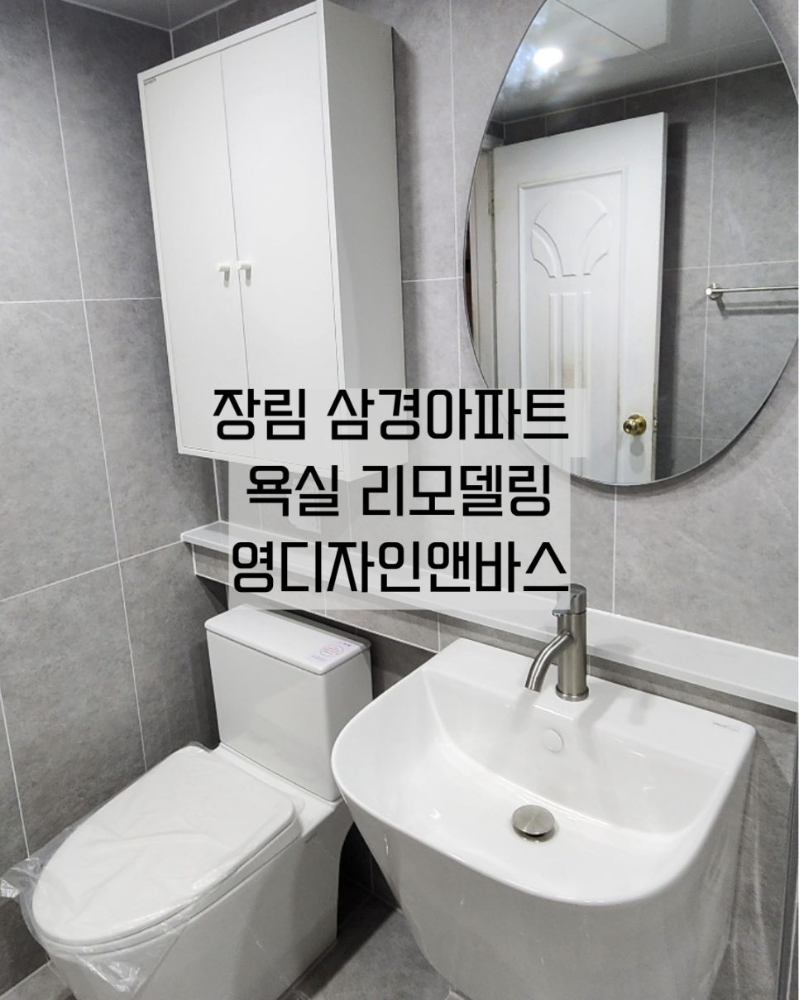
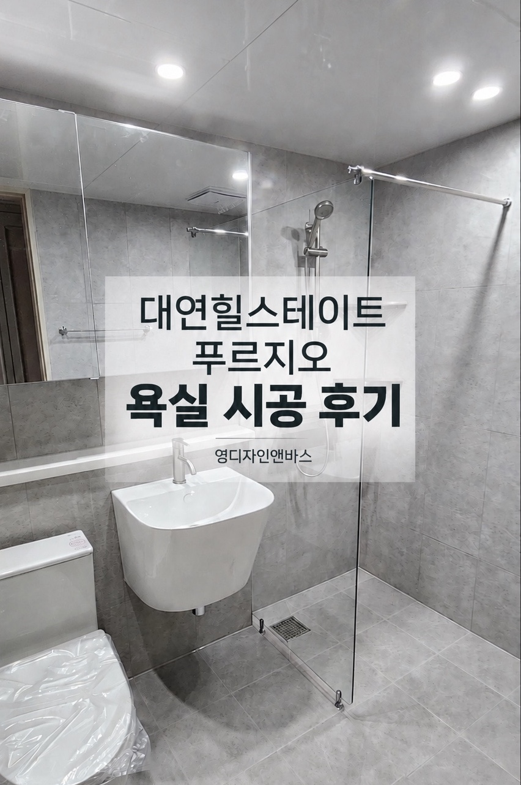
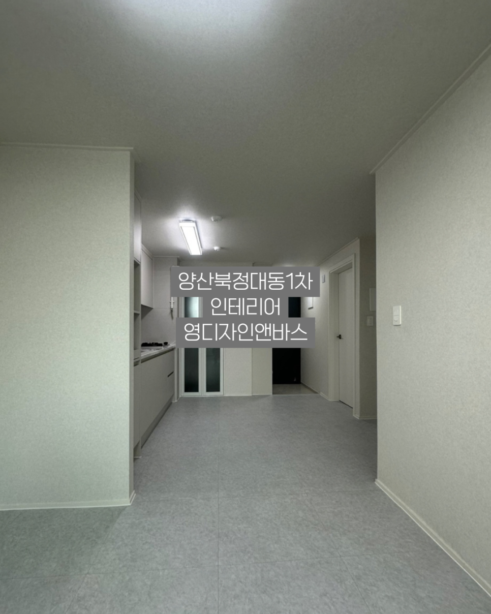
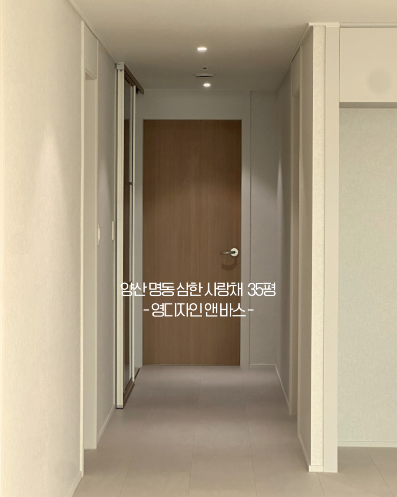

“말주변은 없어도,
내 집 고치는 마음 하나로 현장을 지킵니다.”
인테리어는 사진 한 장으로 끝나지 않고, 공사가 끝난 뒤 매일 아침저녁으로 가족이 살아가는 공간을 만드는 일입니다. 화려한 광고 대신 현장의 기본을 지키는 영디자인&바스 대표 이세영과 가족의 이야기를 전합니다.

영디자인&바스 실제 시공 현장
부산 전 지역 · 양산 직접 점검
인테리어는 사진 한 장으로 끝나지 않고, 공사가 끝난 뒤 매일 아침저녁으로 가족이 살아가는 공간을 만드는 일입니다. 화려한 광고 대신 현장의 기본을 지키는 영디자인&바스 대표 이세영과 가족의 이야기를 전합니다.
현장에서 오랫동안 직접 연장을 잡고 수많은 집을 고쳐온 이세영 대표는 사실 본인을 앞세워 자랑하는 것을 가장 쑥스러워합니다. “그저 맡겨주신 집, 하자 없이 깔끔하게 마감해 드리는 게 기술자의 본분”이라는 생각으로 묵묵히 현장을 지켜왔기 때문입니다.
지금의 영디자인&바스는 그 오랜 현장 기술력 위에, 아버지와 함께 현장을 뛰며 시공과 온라인 소통을 챙기는 아들의 젊은 감각, 그리고 고객 한 분 한 분의 예산과 고민을 편안하게 듣고 정리하는 상담이 하나로 모여 함께 만들어가고 있습니다.
오랜 인테리어 현장 경험을 바탕으로 철거·방수·타일·마감까지 현장의 핵심 공정을 직접 꼼꼼히 살핍니다.
욕실 리모델링부터 도배·장판·마루·싱크대·창호·목재·조명까지, 현장에서 오래 호흡을 맞춰온 검증된 전문 사장님들과 함께 완성도를 높입니다.
과잉 견적 없이 고객님 댁의 상태와 예산에 꼭 맞는 시공 범위만 정직하게 안내해 드립니다.
겉모습은 비슷해 보여도 시간이 지나면 차이가 나는 이유, 바로 기본 공정에 있습니다.
타일을 붙이고 나면 속은 보이지 않습니다. 하지만 물이 고이지 않고 자연스럽게 빠지는 바닥 구배(물매)와 꼼꼼한 방수 작업이 뒷받침되어야 수년 뒤에도 누수나 냄새 걱정 없이 편안하게 쓰실 수 있습니다.
거주 중에 욕실이나 부분 수리를 하실 때 가장 걱정하시는 부분이 먼지와 불편함입니다. 엘리베이터와 복도, 실내 이동 동선까지 꼼꼼하게 보양하고 작업 후 정리를 철저히 챙깁니다.
무조건 비싼 자재를 권하지 않습니다. 현장 실측을 통해 꼭 고쳐야 할 부분과 살려서 쓸 수 있는 부분을 구분해 드리고, 상담 때 약속드린 자재와 마감 기준을 끝까지 지킵니다.
영디자인&바스가 직접 다녀온 부산·인근 지역 아파트 실제 시공 모습입니다.




“우리 집 욕실도 부분 수리가 될까?”, “예산이 이 정도인데 어디까지 고칠 수 있을까?”
당장 공사를 결정하지 않으셔도 괜찮습니다. 전화나 문자로 편하게 물어보시면 현장 경험에 비추어 가장 현실적이고 정직한 방법을 안내해 드리겠습니다.
📍 오프라인 매장 위치 : 부산 사하구 장림번영로 31 (두송로 25), 장림우림그린맨션 상가동 1층 103호 (1호선 장림역 2번 출구 도보 3분)
📞 상담·견적 문의 : 010-4477-3087 | 현장·시공 문의 : 010-4564-3792
※ 현장 시공 중인 경우가 많아 매장이 비어 있을 수 있으니, 방문·상담 전 미리 전화 주시면 서로 가능한 시간을 맞춰 안내해 드립니다.